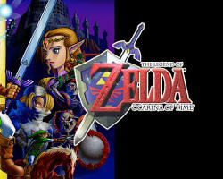
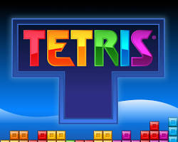
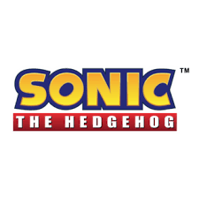

A História dos Gigantes Retro
Embarque em uma viagem nostálgica e descubra os jogos que não apenas divertiram gerações, mas também pavimentaram o caminho para a indústria de videogames como a conhecemos hoje...
Super Mario Bros.
NES (1985)

O malvado Bowser e seus Koopa invadem o Reino Cogumelo e sequestram a Princesa Peach. Os irmãos encanadores Mario e Luigi chegam para salvar o dia.
Revolucionou os jogos de plataforma, introduzindo personagens icônicos e mecânicas inovadoras.
The Legend of Zelda: Ocarina of Time
Nintendo 64 (1998)

Em Hyrule, o jovem Link é chamado para deter Ganondorf, o maléfico rei Gerudo que almeja a poderosa Triforce.
Considerado um marco nos jogos de aventura 3D, com sistemas de mira inovadores e narrativa envolvente.
Menções Honrosas
Outros títulos importantes que merecem ser lembrados incluem:
-
Pac-Man
Arcade (1980)

Controle Pac-Man, uma criatura amarela e redonda, em um labirinto. O objetivo é comer todos os pequenos pontos e evitar os fantasmas.
-
Tetris
Electronika 60, Game Boy, Arcade

Tetris é um jogo de quebra-cabeça onde blocos geométricos chamados Tetriminos caem do topo da tela.
-
Street Fighter II
Arcade (1991)

Um jogo de luta onde jogadores escolhem entre um elenco diversificado de lutadores de diferentes partes do mundo.
-
Donkey Kong
Arcade (1981)

Mario deve resgatar a Princesa de Donkey Kong, escalando plataformas e evitando obstáculos.
-
Sonic the Hedgehog
Sega Genesis (1991)

Um jogo de plataforma onde o jogador controla Sonic, um ouriço que corre em alta velocidade.
-
Guitar Hero
PlayStation 2 (2005)

Um jogo de ritmo onde os jogadores usam um controle em forma de guitarra para tocar músicas famosas, seguindo as notas que aparecem na tela.
Estes são apenas alguns exemplos dos muitos jogos retro que deixaram sua marca na história...